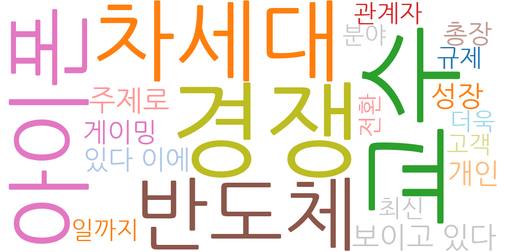
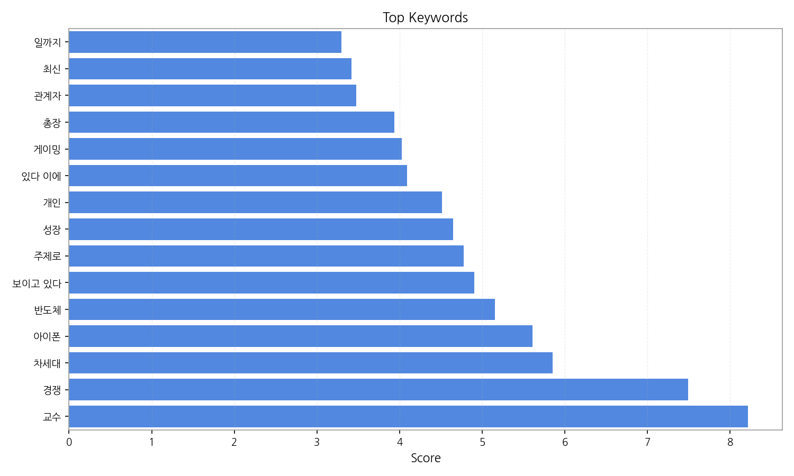
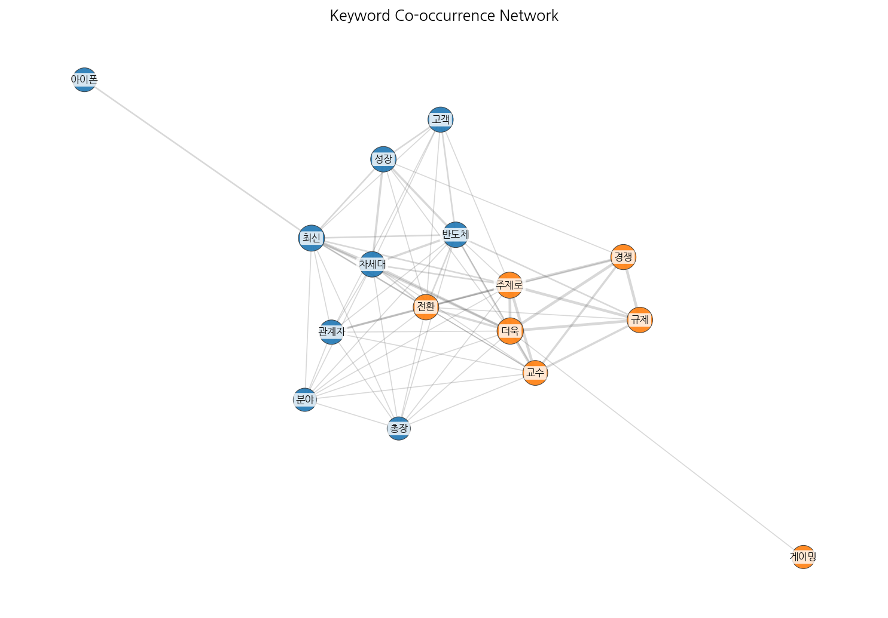
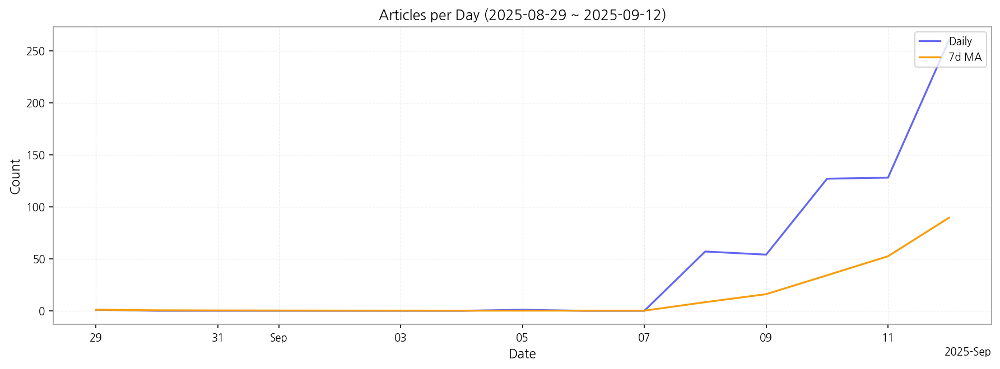

이번 기간 핵심 토픽과 키워드, 주요 시사점을 요약합니다.
핵심 맥락 설명: 데이터는 한국 뉴스 기사를 분석한 결과로, 주요 토픽은 크게 세 가지로 묶을 수 있습니다. 첫째, 디스플레이 산업의 성장과 관련된 내용(topic 0, 3, 4)으로, OLED, LED 기술 발전과 시장 경쟁, 매출 증대 등이 주요 키워드입니다. 둘째, AI 기술과 플랫폼 관련 기사(topic 1, 2, 4)가 다수를 차지하며, 글로벌 시장 동향과 국내 기업의 경쟁력이 주요 관심사임을 보여줍니다. 마지막으로, 개인정보보호 및 경쟁법 관련 이슈(topic 5)와 산업 전반의 글로벌 경쟁 및 교육 관련 뉴스(topic 6, 7)가 언급되고 있습니다. 반도체 소재 등 첨단 기술 분야의 뉴스도 상당수를 차지하고 있습니다.
최근 변화/스파이크: 9월 8일부터 기사 수가 급증하여 9월 12일에는 260건에 달했습니다. 이는 특정 이벤트나 뉴스 보도에 의한 집중적인 언론 보도를 시사하며, 해당 기간에 발생한 주요 사건에 대한 분석이 필요합니다.
실무 인사이트:
주요 이슈 모니터링 강화: 9월 8일 이후 기사 급증 원인을 분석하여, 디스플레이, AI, 반도체 산업의 주요 이슈 및 트렌드를 실시간으로 파악하고 대응 전략을 수립해야 합니다. 특히, OLED, LED, AI 플랫폼 관련 뉴스에 집중하여 경쟁사 동향과 시장 변화를 예측해야 합니다.

| Rank | Keyword | Score |
|---|---|---|
| 1 | 교수 | 8.219 |
| 2 | 경쟁 | 7.494 |
| 3 | 차세대 | 5.851 |
| 4 | 아이폰 | 5.611 |
| 5 | 반도체 | 5.153 |
| 6 | 보이고 있다 | 4.908 |
| 7 | 주제로 | 4.780 |
| 8 | 성장 | 4.646 |
| 9 | 개인 | 4.512 |
| 10 | 있다 이에 | 4.090 |
| 11 | 게이밍 | 4.027 |
| 12 | 총장 | 3.938 |
| 13 | 관계자 | 3.476 |
| 14 | 최신 | 3.419 |
| 15 | 일까지 | 3.295 |



핵심 맥락 설명: 데이터는 한국 뉴스 기사를 분석한 결과로, 주요 토픽은 크게 세 가지로 묶을 수 있습니다. 첫째, 디스플레이 산업의 성장과 관련된 내용(topic 0, 3, 4)으로, OLED, LED 기술 발전과 시장 경쟁, 매출 증대 등이 주요 키워드입니다. 둘째, AI 기술과 플랫폼 관련 기사(topic 1, 2, 4)가 다수를 차지하며, 글로벌 시장 동향과 국내 기업의 경쟁력이 주요 관심사임을 보여줍니다. 마지막으로, 개인정보보호 및 경쟁법 관련 이슈(topic 5)와 산업 전반의 글로벌 경쟁 및 교육 관련 뉴스(topic 6, 7)가 언급되고 있습니다. 반도체 소재 등 첨단 기술 분야의 뉴스도 상당수를 차지하고 있습니다.
최근 변화/스파이크: 9월 8일부터 기사 수가 급증하여 9월 12일에는 260건에 달했습니다. 이는 특정 이벤트나 뉴스 보도에 의한 집중적인 언론 보도를 시사하며, 해당 기간에 발생한 주요 사건에 대한 분석이 필요합니다.
실무 인사이트:
주요 이슈 모니터링 강화: 9월 8일 이후 기사 급증 원인을 분석하여, 디스플레이, AI, 반도체 산업의 주요 이슈 및 트렌드를 실시간으로 파악하고 대응 전략을 수립해야 합니다. 특히, OLED, LED, AI 플랫폼 관련 뉴스에 집중하여 경쟁사 동향과 시장 변화를 예측해야 합니다.
| Idea | Target | Value Prop | Score |
|---|---|---|---|
| 교수 | 기업(B2B) | 교수 도입으로 비용/품질/경험을 개선. | 3.00 |
| 경쟁 | 기업(B2B) | 경쟁 도입으로 비용/품질/경험을 개선. | 3.00 |
| 차세대 | 기업(B2B) | 차세대 도입으로 비용/품질/경험을 개선. | 3.00 |
| 아이폰 | 기업(B2B) | 아이폰 도입으로 비용/품질/경험을 개선. | 3.00 |
| 반도체 | 기업(B2B) | 반도체 도입으로 비용/품질/경험을 개선. | 3.00 |